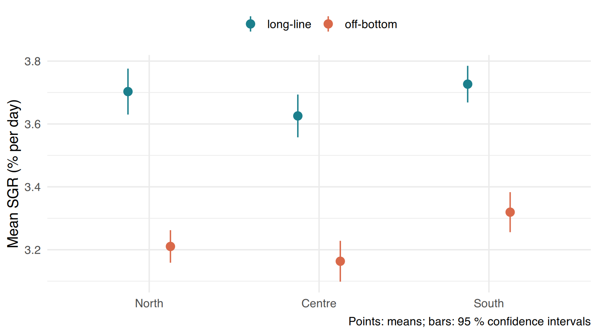
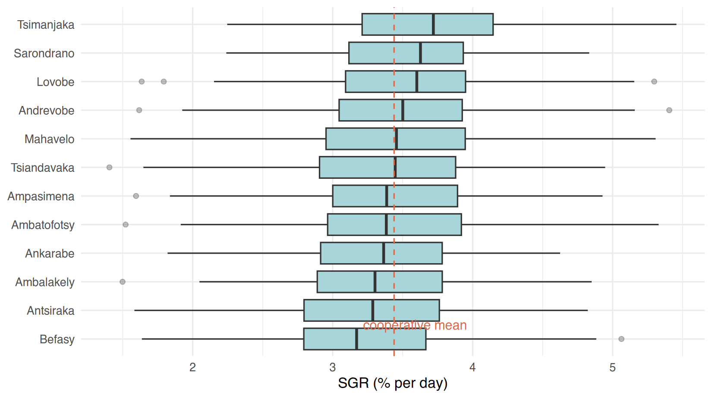
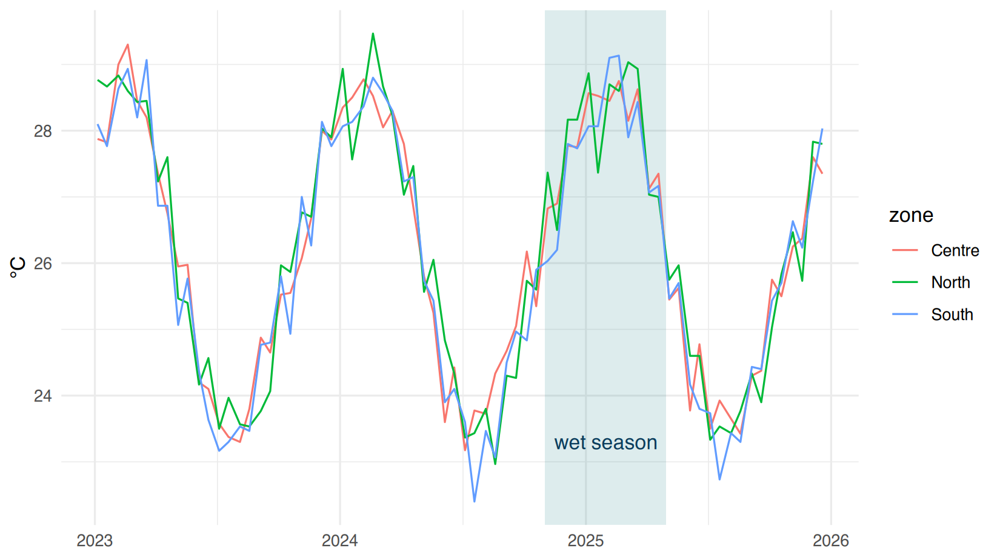
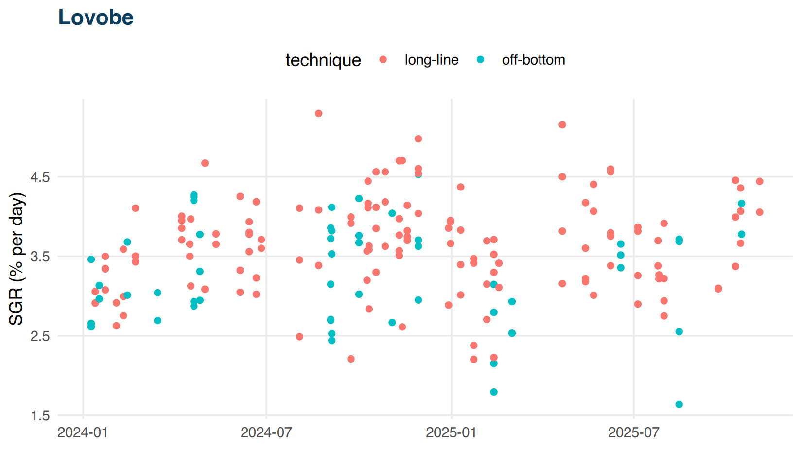
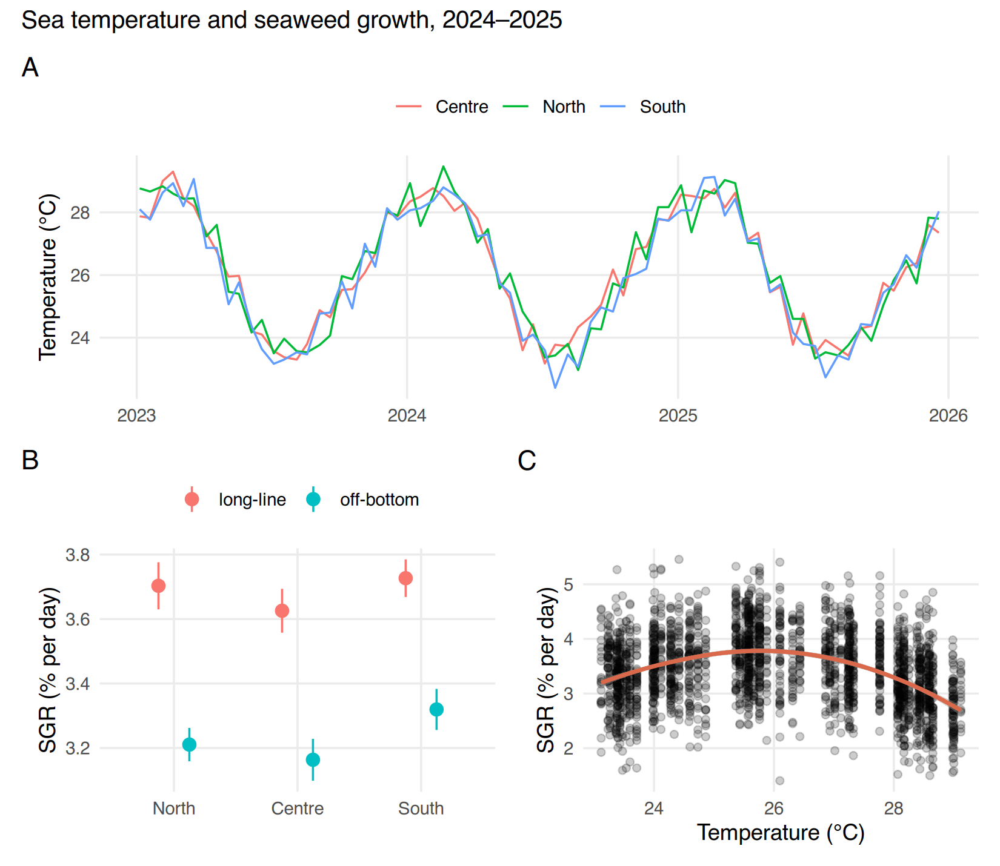

I8 · Mastering ggplot2 (2): summaries, time, annotations, layoutsI8 · Maîtriser ggplot2 (2) : résumés, temps, annotations, mises en page
~3 h
By the end of this session you will be able to
- show means with error bars (SD, SE or 95 % CI) for
groups side by side (
position_dodge); - draw time series with readable date axes;
- order categories by their values and annotate a graph (lines, text, areas);
- write your own theme function (Session I6) and produce one figure per group with a loop (Session I5);
- combine several graphs in one figure with patchwork and export it for a report.
À la fin de cette séance vous saurez
- montrer des moyennes avec barres d’erreur (ET, ES
ou IC à 95 %) pour des groupes côte à côte (
position_dodge) ; - tracer des séries temporelles avec des axes de dates lisibles ;
- ordonner des catégories selon leurs valeurs et annoter un graphique (lignes, texte, zones) ;
- écrire votre propre fonction de thème (séance I6) et produire une figure par groupe avec une boucle (séance I5) ;
- combiner plusieurs graphiques en une figure avec patchwork et l’exporter pour un rapport.
⇩ checkpoint: I3_seaweed_analysis.csv ⇩ checkpoint: I2_water_quality_clean.csv
Means and error barsMoyennes et barres d’erreur
First compute the summary per group (Session I6 functions are handy), then draw it. The 95 % confidence interval of a mean is approximately mean ± 1.96 × SE (for large samples): it shows the precision of the mean, and is the most informative choice when comparing groups. Always say in the caption which one you show.
Calculez d’abord le résumé par groupe (les fonctions de la séance I6 sont pratiques), puis tracez-le. L’intervalle de confiance à 95 % d’une moyenne vaut environ moyenne ± 1,96 × ES (pour les grands échantillons) : il montre la précision de la moyenne, et c’est le choix le plus informatif pour comparer des groupes. Indiquez toujours dans la légende lequel vous montrez.
se <- function(x) sd(x, na.rm = TRUE) / sqrt(sum(!is.na(x)))
summ <- seaweed %>%
group_by(zone, technique) %>%
summarise(n = sum(!is.na(sgr)), mean = mean(sgr, na.rm = TRUE), se = se(sgr), .groups = "drop") %>%
mutate(low = mean - 1.96 * se, high = mean + 1.96 * se)
summ#> # A tibble: 6 × 7
#> zone technique n mean se low high
#> <fct> <chr> <int> <dbl> <dbl> <dbl> <dbl>
#> 1 North long-line 288 3.70 0.0373 3.63 3.78
#> 2 North off-bottom 564 3.21 0.0264 3.16 3.26
#> 3 Centre long-line 335 3.63 0.0347 3.56 3.69
#> 4 Centre off-bottom 352 3.16 0.0331 3.10 3.23
#> 5 South long-line 441 3.73 0.0297 3.67 3.78
#> 6 South off-bottom 337 3.32 0.0325 3.26 3.38Functions and arguments used here
| Function / argument | What it does | Value it expects |
|---|---|---|
se() |
our function of Session I6 | |
mean ± 1.96 × se |
limits of the 95 % confidence interval of the mean (normal approximation, fine for n > 30) |
Fonctions et arguments utilisés ici
| Fonction / argument | Ce qu’il fait | Valeur attendue |
|---|---|---|
se() |
notre fonction de la séance I6 | |
mean ± 1.96 × se |
limites de l’intervalle de confiance à 95 % de la moyenne (approximation normale, correcte pour n > 30) |
dodge <- position_dodge(width = 0.5) # shift the two techniques side by side
ggplot(summ, aes(zone, mean, colour = technique)) +
geom_pointrange(aes(ymin = low, ymax = high), position = dodge, size = 0.6) +
scale_colour_manual(values = c("long-line" = "#1b7f8c", "off-bottom" = "#d9694a")) +
labs(x = NULL, y = "Mean SGR (% per day)", colour = NULL,
caption = "Points: means; bars: 95 % confidence intervals") +
theme_minimal(base_size = 13) + theme(legend.position = "top")
Functions and arguments used here
| Function / argument | What it does | Value it expects |
|---|---|---|
position_dodge(width) |
shifts the groups side by side so they do not overlap (Beginner Session 10) | a number: the distance between groups, in units of the x axis |
geom_pointrange(aes(ymin, ymax), position, size) |
a point (at y) with a vertical line from
ymin to ymax |
columns for ymin, ymax; size
of the point |
position |
how overlapping elements are arranged; the same object
dodge must be used in every layer |
position_dodge(), "identity",
"jitter" |
colour = NULL in labs() |
no title for the colour legend |
Fonctions et arguments utilisés ici
| Fonction / argument | Ce qu’il fait | Valeur attendue |
|---|---|---|
position_dodge(width) |
décale les groupes côte à côte pour qu’ils ne se superposent pas (séance 10 du niveau débutant) | un nombre : la distance entre groupes, en unités de l’axe x |
geom_pointrange(aes(ymin, ymax), position, size) |
un point (à y) avec un trait vertical de
ymin à ymax |
colonnes pour ymin, ymax ;
size du point |
position |
comment les éléments qui se superposent sont disposés ; le même
objet dodge doit être utilisé dans chaque couche |
position_dodge(), "identity",
"jitter" |
colour = NULL in labs() |
pas de titre pour la légende des couleurs |
For bars, use geom_col(position = position_dodge(0.8)) +
geom_errorbar(position = position_dodge(0.8), width = 0.2)
— the dodge width must be the same in both layers.
Points (geom_pointrange) are often better than bars: bars
suggest that values start at zero, which is not meaningful for a rate or
a temperature.
Pour des barres, utilisez
geom_col(position = position_dodge(0.8)) +
geom_errorbar(position = position_dodge(0.8), width = 0.2)
— la largeur de décalage doit être la même dans les
deux couches. Les points (geom_pointrange) sont souvent
préférables aux barres : les barres suggèrent que les valeurs partent de
zéro, ce qui n’a pas de sens pour un taux ou une température.
Time seriesSéries temporelles
With a Date column on the x-axis,
scale_x_date() controls the ticks:
date_breaks = "3 months",
date_labels = "%b %Y" (format codes of Session I1).
geom_line() joins the points of the same
group: set group or colour.
Avec une colonne Date sur l’axe x,
scale_x_date() contrôle les graduations :
date_breaks = "3 months",
date_labels = "%b %Y" (codes de format de la séance I1).
geom_line() relie les points d’un même
groupe : précisez group ou
colour.
st <- read.csv("data/stations.csv")
wq_zone <- wq %>% left_join(st[, c("station", "zone")], by = "station") %>%
group_by(zone, date) %>% summarise(temp = mean(temp_C, na.rm = TRUE), .groups = "drop")
ggplot(wq_zone, aes(date, temp, colour = zone)) +
geom_line(linewidth = 0.8) +
scale_x_date(date_breaks = "6 months", date_labels = "%b %Y") +
scale_colour_brewer(palette = "Dark2") +
labs(x = NULL, y = "Mean temperature (°C)", colour = "Zone") +
theme_minimal()
Functions and arguments used here
| Function / argument | What it does | Value it expects |
|---|---|---|
geom_line(linewidth) |
joins the points of each group (here each colour) in
the order of x; linewidth = thickness of the line |
a number (default 0.5) |
scale_x_date(date_breaks, date_labels) |
a date axis | |
date_breaks |
the space between two ticks | "1 month", "6 months",
"1 year"… |
date_labels |
how the dates are written, with the % codes of Session
I1 |
e.g. "%b %Y" → Jan 2024 |
Fonctions et arguments utilisés ici
| Fonction / argument | Ce qu’il fait | Valeur attendue |
|---|---|---|
geom_line(linewidth) |
relie les points de chaque groupe (ici chaque colour)
dans l’ordre de x ; linewidth = épaisseur du trait |
un nombre (0,5 par défaut) |
scale_x_date(date_breaks, date_labels) |
un axe de dates | |
date_breaks |
l’espace entre deux graduations | "1 month", "6 months",
"1 year"… |
date_labels |
comment les dates sont écrites, avec les codes % de la
séance I1 |
ex. "%b %Y" → janv. 2024 |
In ggplot2 the thickness of a line is
linewidth, while size is used for
points and text (since ggplot2 3.4; older code uses
size for lines too). One more case where the name depends
on the element.
Dans ggplot2, l’épaisseur d’une ligne s’appelle
linewidth, alors que size sert pour les
points et le texte (depuis ggplot2 3.4 ; du code plus
ancien utilise aussi size pour les lignes). Encore un cas
où le nom dépend de l’élément.
Ordering and annotatingOrdonner et annoter
reorder(category, value, FUN = median) sorts categories
by a summary of the values — a ranked graph is much faster to read.
Annotations guide the reader: a reference line
(geom_hline()), a shaded period
(annotate("rect")), a text label
(annotate("text")).
reorder(catégorie, valeur, FUN = median) trie les
catégories selon un résumé des valeurs — un graphique classé se lit
beaucoup plus vite. Les annotations guident le lecteur : une ligne de
référence (geom_hline()), une période ombrée
(annotate("rect")), un texte
(annotate("text")).
overall <- mean(seaweed$sgr, na.rm = TRUE)
ggplot(seaweed, aes(reorder(village, sgr, FUN = median, na.rm = TRUE), sgr)) +
geom_boxplot(fill = "#a8d5da", na.rm = TRUE, outlier.alpha = 0.3) +
geom_hline(yintercept = overall, linetype = "dashed", colour = "#d9694a") +
annotate("text", x = 1.5, y = overall + 0.15, label = "cooperative mean", colour = "#d9694a", size = 3.5) +
coord_flip() +
labs(x = NULL, y = "SGR (% per day)") + theme_minimal()
Functions and arguments used here
| Function / argument | What it does | Value it expects |
|---|---|---|
reorder(x, X, FUN, ...) |
reorders the categories x according to a statistic of
X (here the median SGR of each village); extra arguments
(na.rm) go to FUN |
a categorical column, a numeric column, a function |
geom_hline(yintercept, linetype) |
a horizontal line at y = yintercept
(geom_vline(xintercept) for vertical) |
a number; "solid", "dashed",
"dotted" |
annotate(geom, x, y, label, ...) |
adds one element at a position you give, not taken from the data | "text", "rect", "segment"…,
then its position and settings |
coord_flip() |
swaps x and y: horizontal boxes, long names readable | nothing |
Fonctions et arguments utilisés ici
| Fonction / argument | Ce qu’il fait | Valeur attendue |
|---|---|---|
reorder(x, X, FUN, ...) |
réordonne les catégories x selon une statistique de
X (ici le SGR médian de chaque village) ; les arguments
supplémentaires (na.rm) vont à FUN |
une colonne catégorielle, une colonne numérique, une fonction |
geom_hline(yintercept, linetype) |
une ligne horizontale à y = yintercept
(geom_vline(xintercept) pour verticale) |
un nombre ; "solid", "dashed",
"dotted" |
annotate(geom, x, y, label, ...) |
ajoute un élément à une position que vous donnez, pas tirée des données | "text", "rect", "segment"…,
puis sa position et ses réglages |
coord_flip() |
échange x et y : boîtes horizontales, noms longs lisibles | rien |
linetype in ggplot2 is the same idea as lty
in base R (Beginner Session 7).
linetype dans ggplot2 est la même idée que
lty en R de base (séance 7 du niveau débutant).
ggplot(wq_zone, aes(date, temp, colour = zone)) +
annotate("rect", xmin = as.Date("2024-11-01"), xmax = as.Date("2025-04-30"),
ymin = -Inf, ymax = Inf, alpha = 0.15, fill = "#1b7f8c") +
annotate("text", x = as.Date("2025-01-31"), y = 23.3, label = "wet season", colour = "#0b3d5c") +
geom_line() + theme_minimal() + labs(x = NULL, y = "°C")
Functions and arguments used here
| Function / argument | What it does | Value it expects |
|---|---|---|
annotate("rect", xmin, xmax, ymin, ymax, alpha, fill) |
a shaded rectangle; -Inf / Inf = from the
bottom to the top of the panel |
positions in the units of the axes (here dates) |
Fonctions et arguments utilisés ici
| Fonction / argument | Ce qu’il fait | Valeur attendue |
|---|---|---|
annotate("rect", xmin, xmax, ymin, ymax, alpha, fill) |
un rectangle ombré ; -Inf / Inf = du bas
au haut du panneau |
positions dans les unités des axes (ici des dates) |
Your own theme, and one figure per groupVotre propre thème, et une figure par groupe
A function returning a theme (Session I6) gives all your report figures the same look, and you change it in one place. A loop (Session I5) saves one figure per village.
Une fonction qui renvoie un thème (séance I6) donne le même aspect à toutes les figures d’un rapport, et on la modifie à un seul endroit. Une boucle (séance I5) enregistre une figure par village.
theme_coop <- function(base_size = 12) {
theme_minimal(base_size = base_size) +
theme(plot.title = element_text(face = "bold", colour = "#0b3d5c"),
legend.position = "top", panel.grid.minor = element_blank())
}
p_v <- function(v) {
d <- seaweed[seaweed$village == v, ]
ggplot(d, aes(planting_date, sgr, colour = technique)) +
geom_point(na.rm = TRUE) +
labs(title = v, x = NULL, y = "SGR (% per day)") + theme_coop()
}
p_v("Lovobe")
Functions and arguments used here
| Function / argument | What it does | Value it expects |
|---|---|---|
theme_coop <- function(base_size = 12) {...} |
a function (Session I6) that returns a theme: reuse it in every figure | |
p_v(v) |
a function that returns a ggplot for one village |
Fonctions et arguments utilisés ici
| Fonction / argument | Ce qu’il fait | Valeur attendue |
|---|---|---|
theme_coop <- function(base_size = 12) {...} |
une fonction (séance I6) qui renvoie un thème : réutilisez-la dans chaque figure | |
p_v(v) |
une fonction qui renvoie un ggplot pour un village |
Combining graphs with patchworkCombiner des graphiques avec patchwork
patchwork adds graphs together: p1 + p2
side by side, p1 / p2 stacked, (p1 | p2) / p3
mixed. plot_annotation(tag_levels = "A") adds the letters
A, B, C used in articles.
patchwork additionne des graphiques :
p1 + p2 côte à côte, p1 / p2 empilés,
(p1 | p2) / p3 combinés.
plot_annotation(tag_levels = "A") ajoute les lettres A, B,
C utilisées dans les articles.
library(patchwork)
pA <- ggplot(wq_zone, aes(date, temp, colour = zone)) + geom_line() + theme_coop() +
labs(x = NULL, y = "Temperature (°C)", colour = NULL)
pB <- ggplot(summ, aes(zone, mean, colour = technique)) +
geom_pointrange(aes(ymin = low, ymax = high), position = dodge) + theme_coop() +
labs(x = NULL, y = "SGR (% per day)", colour = NULL)
pC <- ggplot(seaweed, aes(temp_mean, sgr)) + geom_point(alpha = 0.2, na.rm = TRUE) +
geom_smooth(method = "loess", formula = y ~ x, na.rm = TRUE, colour = "#d9694a") + theme_coop() +
labs(x = "Temperature (°C)", y = "SGR (% per day)")
(pA) / (pB | pC) + plot_annotation(tag_levels = "A",
title = "Sea temperature and seaweed growth, 2024–2025")
Functions and arguments used here
| Function / argument | What it does | Value it expects |
|---|---|---|
library(patchwork) |
package to combine ggplots | |
p1 | p2, p1 / p2 |
side by side / one above the other; parentheses group them | ggplot objects |
plot_annotation(tag_levels, title) |
labels each plot ("A" → A, B, C; "a",
"1") and adds a common title |
|
geom_smooth(method, formula) |
a trend curve with its confidence band; "loess" =
flexible curve, "lm" = straight line |
method in quotes; formula = y ~ x |
Fonctions et arguments utilisés ici
| Fonction / argument | Ce qu’il fait | Valeur attendue |
|---|---|---|
library(patchwork) |
package pour combiner des ggplots | |
p1 | p2, p1 / p2 |
côte à côte / l’un au-dessus de l’autre ; les parenthèses les regroupent | objets ggplot |
plot_annotation(tag_levels, title) |
étiquette chaque graphique ("A" → A, B, C ;
"a", "1") et ajoute un titre commun |
|
geom_smooth(method, formula) |
une courbe de tendance avec sa bande de confiance ;
"loess" = courbe souple, "lm" = droite |
method entre guillemets ;
formula = y ~ x |
fig <- (pA) / (pB | pC) + plot_annotation(tag_levels = "A")
ggsave("outputs/figure_1.png", fig, width = 18, height = 16, units = "cm", dpi = 300)
ggsave("outputs/figure_1.pdf", fig, width = 18, height = 16, units = "cm") # vector, for printingFunctions and arguments used here
| Function / argument | What it does | Value it expects |
|---|---|---|
ggsave(filename, plot, width, height, units, dpi) |
reminder (Beginner Session 8); with a PDF, units = "cm"
works too (unlike pdf()) |
Fonctions et arguments utilisés ici
| Fonction / argument | Ce qu’il fait | Valeur attendue |
|---|---|---|
ggsave(filename, plot, width, height, units, dpi) |
rappel (séance 8 du niveau débutant) ; avec un PDF,
units = "cm" fonctionne aussi (contrairement à
pdf()) |
Panel C already suggests the answer to one of the cooperative’s questions: growth is not a straight line of temperature — it is best around 25–26 °C and drops when the water is warmer. Keep this in mind for the correlation in Session I10.
Le panneau C suggère déjà la réponse à une question de la coopérative : la croissance n’est pas une droite de la température — elle est meilleure autour de 25–26 °C et baisse quand l’eau est plus chaude. Gardez-le en tête pour la corrélation de la séance I10.
Application work & quizTravail d’application et quiz
Application work I8
Script scripts/i08_ggplot.R, using your
theme_coop().
- Plot mean SGR ± 95 % CI by zone and technique
(
geom_pointrange, dodge). Upper limit of the CI for off-bottom lines in the North (3 decimals)? - Time series of mean temperature per zone. On which date
(
yyyy-mm-dd) is the highest mean recorded, and what is its value (2 decimals)? - Boxplots of SGR by village ordered by median. Which village has the highest median? The lowest?
- Mean SGR per season and year (
group_by(season, year)), shown as points joined by lines. Value for the wet season 2025 (3 decimals)? - Combine three of your graphs with patchwork (tags A, B, C) and save the figure in PNG and PDF.
- Use a loop to save one SGR figure per village.
Travail d’application I8
Script scripts/i08_ggplot.R, avec votre
theme_coop().
- Tracez le SGR moyen ± IC à 95 % par zone et technique
(
geom_pointrange, décalage). Borne supérieure de l’IC des lignes off-bottom du Nord (3 décimales) ? - Série temporelle de la température moyenne par zone. À quelle date
(
aaaa-mm-jj) la moyenne la plus élevée est-elle enregistrée ? Donnez la date, et la valeur (2 décimales). - Boxplots du SGR par village ordonnés par médiane. Quel village a la médiane la plus élevée ? La plus faible ?
- SGR moyen par saison et par année
(
group_by(season, year)), en points reliés par des lignes. Valeur pour la saison des pluies 2025 (3 décimales) ? - Combinez trois de vos graphiques avec patchwork (étiquettes A, B, C) et enregistrez la figure en PNG et en PDF.
- Avec une boucle, enregistrez une figure de SGR par village.
Question 2: after building wq_zone,
wq_zone[which.max(wq_zone$temp), ] gives the row of the
maximum.
Question 2 : après avoir construit wq_zone,
wq_zone[which.max(wq_zone$temp), ] donne la ligne du
maximum.
library(ggplot2); library(dplyr); library(patchwork)
seaweed <- read.csv("data/checkpoints/I3_seaweed_analysis.csv")
seaweed$planting_date <- as.Date(seaweed$planting_date)
se <- function(x) sd(x, na.rm = TRUE) / sqrt(sum(!is.na(x)))
summ <- seaweed %>% group_by(zone, technique) %>%
summarise(mean = mean(sgr, na.rm = TRUE), se = se(sgr), .groups = "drop") %>%
mutate(low = mean - 1.96 * se, high = mean + 1.96 * se)
summ # 1
wq <- read.csv("data/checkpoints/I2_water_quality_clean.csv"); wq$date <- as.Date(wq$date)
st <- read.csv("data/stations.csv")
wq_zone <- wq %>% left_join(st[, c("station", "zone")], by = "station") %>%
group_by(zone, date) %>% summarise(temp = mean(temp_C, na.rm = TRUE), .groups = "drop")
wq_zone[which.max(wq_zone$temp), ] # 2
sort(tapply(seaweed$sgr, seaweed$village, median, na.rm = TRUE)) # 3
seaweed %>% group_by(season, year) %>% summarise(m = round(mean(sgr, na.rm = TRUE), 3)) # 4